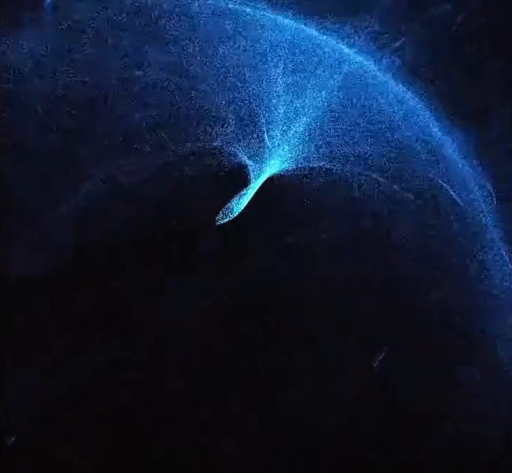

Graphics
Dynamic Particle Systems
Particles that respond to mouse movement, audio, or any parameter you want.
3D Shader Deformation
With fractal noise, lightmaps, and live signals. Also works on 3D models.
Projection Mapping
An under-utilised aspect of openGL, real time rendering allows for reactive visuals and data feedbacks.
Experimental
I don’t just work in openGL. If you have a visual idea you want to realise, I can make it happen!